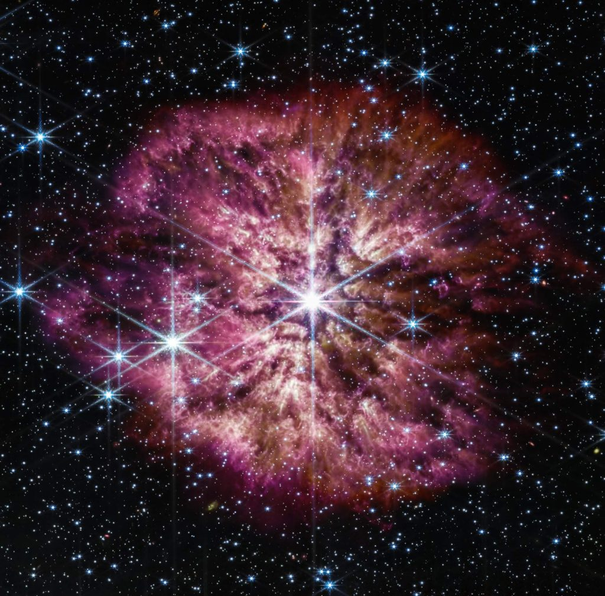

ဒီ ပုံမှာပါတဲ့ ကြယ်ဟာ ကမ္ဘာကနေဆို အလင်းနှစ် ၁၅,၀၀၀ အကွာမှာ ရှိတဲ့ ကြယ်ဖြစ်ပါတယ်။ ဒီကြယ်ဟာ Sagittarius နက္ခတ်ခွင် အတွင်းမှာ ရှိတဲ့ ကြယ်ကြီးတစ်စင်း ဖြစ်ပါတယ်။
ဒီပုံမှာ ပေါက်ကွဲလုလု ဖြစ်နေတဲ့ ကြယ်ကြီးဟာ မြောက်များလှစွာသော ဓါတ်ငွေ့တွေနဲ့ ဒြပ်ထုတွေကို အပြင်ကို ကန်ထုတ်နေတာကို မိမိရရ ရိုက်ကူးထားတာကို တွေ့ကြရမှာ ဖြစ်ပါတယ်။ တကယ်ကို ရုပ်ရှင်တွေ ထဲမှာ ကြယ်ကြီး ပေါက်ကွဲ ထွက်သွားတဲ့ အခါ မြင်ရသလို ပါပဲ။ ဒါမျိုး အခြေအနေကို မိမိရရ ရိုက်ယူနိုင်ဖို့ ဆိုတာက အတော်ကြီးကို ကံကောင်းမှ ဖြစ်နိုင်တဲ့ ကိစ္စပါ။
WR124 လို့ အမည်ပေးထားတဲ့ ဒီကြယ်ကြီးဟာ Wolf-Rayet အမျိုးအစား ကြယ်ကြီး ဖြစ်ပါတယ်။ ဒီ ကြယ်အမျိုးအစားတွေဟာ အလွန် အင်မတန် ဒြပ်ထု ကြီးမားတဲ့ ကြယ်ဘီလူး ကြီးတွေ ဖြစ်ကြပါတယ်။ သူတို့ရဲ့ ဒြပ်ထုဟာ နေ အစင်း ၃၀ စာလောက်နဲ့ ညီမျှပါတယ်။
ဒီကြယ်ကြီးတွေဟာ ဟိုက်ဒြိုဂျင် လောင်စာတွေကို အလွန်လျှင်မြန်တဲ့ အလျင်နဲ့ လောင်ကျွမ်း ပြီး (တကယ်ကတော့ အဏုမြူ ဓါတ်ပြုမှု ဖြစ်တာပါ) နောက်ဆုံး သေဆုံးခါနီးမှာ ပြင်းထန်စွာ ပေါက်ကွဲသွားလေ့ ရှိကြပါတယ်။
ဆူပါနိုဗာ ပေါက်ကွဲမှု ဖြစ်တဲ့ ကြယ်တိုင်းဟာ Wolf-Rayet ကြယ်အမျိုးအစား မဖြစ်ပါဘူး။ ဒီ အမျိုးအစား ဖြစ်ဖို့ဆိုတာ မူလကတဲက အလွန် ကြီးမားတဲ့ ကြယ်အမျိုးအစား ဖြစ်ဖို့ လိုပါတယ်။

အခုထိတော့ WR 124 နေ ၁၀ စင်းစာ ပမာဏ ရှိတဲ့ ဒြပ်ထုတွေကို ခွာချခဲ့ပြီး ဖြစ်ပါတယ်။
ဒီ Wolf-Rayet ကြယ်အမျိုးအစား တွေဟာ အပူချိန်လဲ အလွန် အင်မတန် ပူပြင်းပါတယ်။ ဒီတော့ သူတို့ရဲ့ အလင်းရောင် ကလဲ အခြား ကြယ်အများစုထက် ပိုမို လင်းထိန် တောက်ပကြပါတယ်။ ဒါပေမယ့် သူတို့ဟာ အလွန် ရှားကြတာမို့ ဒီလို ကြယ်မျိုး ရှာတွေ့ဖို့က အတော်တော့ မလွယ်ကူတဲ့ ကိစ္စ ဖြစ်ပါတယ်။
နောက်ပြီး ဒီကြယ်တွေရဲ့ လောင်စာ လောင်ကြွမ်းနှုန်းကလဲ အရမ်းမြန်တာမို့ သူတို့ရဲ့ သက်တမ်းကလဲ အရမ်းကို တိုတောင်းပါတယ်။ အများစုဟာ သက်တမ်းအားဖြင့် နှစ် သိန်းဂဏန်းလောက်ပဲ ရှင်သန် နိုင်ကြပါတယ်။ ဒါကို နေရဲ့ သက်တမ်း နှစ်သန်း 4,500 နဲ့ ယှဉ်ကြည့်ရင် ဒီကြယ်တွေ သက်တမ်း ဘယ်လောက်တိုလဲဆိုတာ သဘောပေါက် နိုင်မှာပါ။
ဒီလို ရှားပါးတာကြောင့် အခုတွေ့ရှိမှုနဲ့ ပါတ်သက်လို့ နက္ခတ်ပညာရှင် တွေအကြား စိတ်ဝင်တစား ဖြစ်နေ ကြပါတယ်။ အထူးသဖြင့် ဒီ ကြယ်ကြီးတွေကြောင့် ဂလက်ဆီတွေ အတွင်းမှာ ဖုန်မှုန့်တိမ်တိုက်ကြီးတွေ ဘယ်လို ဖြစ်လာစေနိုင်သလဲ ဆိုတာကို အထူး စိတ်ဝင် စားကြတာပါ။
ဂြိုဟ်တွေ ဖြစ်ပေါ် မွေးဖွားဖို့ဆိုရင် ဓါတ်ငွေ့ တိမ်တိုက်တွေ လိုအပ်ပါတယ်။ ဒီ တိမ်တိုက်တွေ ဟာ မွေးကင်းစ ကြယ်တွေကိုလဲ အကာအကွယ် ပေးပါသေးတယ်။ နောက်ပြီး အရေးပါတဲ့ မော်လီကျူး တွေဟာလဲ ဒီ ဖုန်မှုန့်တိမ်တိုက်တွေ အတွင်းမှာ ဖြစ်ပေါ် လာကြတာပါ။
ပြဿနာက စကြာဝဠာ ထဲမှာ ဒီလောက်များတဲ့ ဖုန်မှုန့်တိမ်တိုက်တွေ ဘယ်လို ဖြစ်လာလဲ၊ ဘယ်က ရောက်လာကြလဲ ဆိုတာကို ပညာရှင်တွေ အဖြေရှာ မရဘူး ဖြစ်နေ ကြတာပါ။
တနည်းအားဖြင့် စကြာဝဠာထဲ ရှိနေတဲ့ ဖုန်မှုန့်တိမ်တိုက်တွေဟာ ရှိသင့်တာထက် အဆမတန် ပိုများ နေတာပါ။
အခု Wolf-Rayet ကြယ်တွေဟာ သက်တမ်း တိုတိုလေး အတွင်းမှာ ဖုန်မှုန့် နဲ့ ဓါတ်ငွေ့ အမြောက်အများကို ခွာချပစ် ကြတာမို့ ဒီ ကြယ်တွေကများ ဒီလောက် ကြီးမား များပြားတဲ့ ဖုန်တိမ်တိုက် ကြီးတွေကို ဖြစ်စေသလားလို့ ပညာရှင်တွေ သိချင်ကြတာ ဖြစ်ပါတယ်။
အခု ဂျိမ်စ်ဝက်ဘ် မတိုင်မီ အထိ ရှိခဲ့တဲ့ တယ်လီစကုပ် တွေဟာ Wolf-Rayet ကြယ်တွေကို ရှာဖွေ လေ့လာနိုင်လောက်အောင် အားမကောင်း ခဲ့ပါဘူး။ ဒါ့ကြောင့်လဲ အခုလို မျက်ဝါးထင်ထင် လေ့လာ တွေ့မြင်ခွင့် ရတဲ့ အခါ နက္ခတ် ပညာရှင်တွေ စိတ်လှုပ်ရှား ကုန်ကြခြင်းပဲ ဖြစ်ပါတယ်။
Ref: James Webb Takes Breathtaking Image of a Titanic Star That’s About to Explode | Futurism